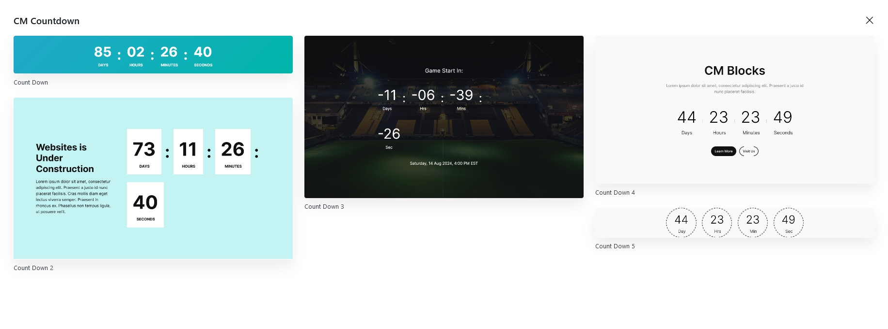
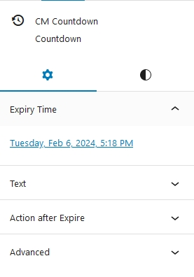
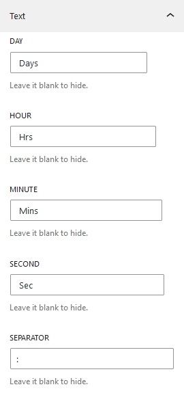
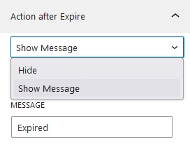
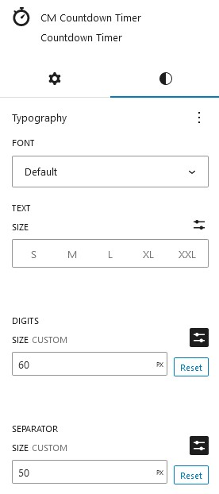
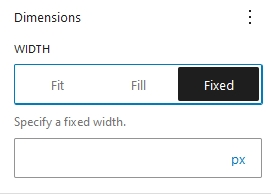
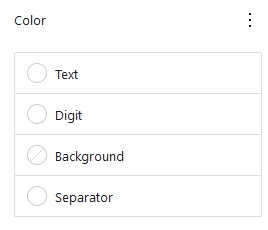
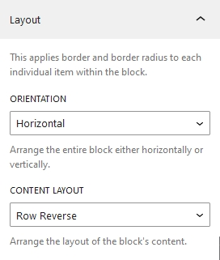
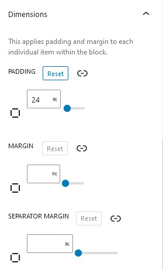

Countdown
Introduction
Cm Countdown is a WordPress Blocks that allows user to add timer inside WordPress content editor. Countdown timers are effective for generating excitement, anticipation, and urgency for upcoming events, product launches, promotions, or any other time-sensitive activities. This Blocks also provide various customization options as well.
Countdown Patterns

To use Our blocks you can directly press + button and search for CM Countdown block. You can either start building slider from scratch or choose out beautiful prebuild patterns. Currently there are 5 beautiful slider templates available, which you can use it or also can modify as well.
Countdown Setting and Styles

Countdown options and customization is categorized into Setting and Styles.
Countdown Setting
Expiry time
Here you can choose the date and time of the events and start countdown to till date. When you click on the link a popup calendar appears on the right side from which you can choose the date and time of the events.
Text

Here the title text can be added for days, Hours, Minutes, Seconds and Separator as well.
Action after Expiry

This options allow you to display your own custom message after the countdown time expires. The options can be hidden or shown from the dropdown.
Countdown Style

Typography
Under Countdown typography there is varieties of font options like font family, text-sizes, digits sizes, separator sizes and mush more.
Dimensions

There are three options available for the countdown's width. The first is to fit the countdown within the width of the screen; the second is to fill; a custom fixed width of the countdown can also be selected.
Color

The color options include the text color of titles, digit and separator. As well as background color also can be selected from the options
Layout

The countdown's orientation and content arrangement can be chosen under the layout options. The countdown has two orientation options: vertical and horizontal. Similarly, there are four options for content layout: row, column, row-reverse, and column-reverse.
Countdown Dimensions

Countdown dimensions specifies the padding and margin for the countdown. Individual side margin and padding also can be added expanding the options.
Border

In this option, the border of countdown is applied. Expanding the border options allows you to give border individually to every side. Similarly, border radius also can be added from the bottom options.